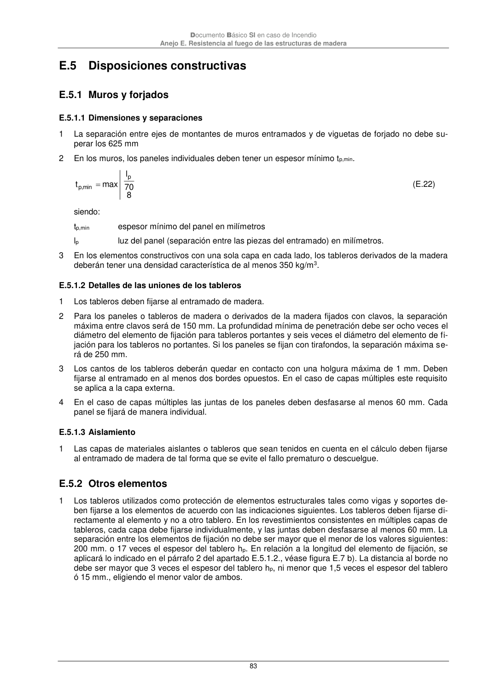

DB-SI Seguridad en caso de incendio · edición 2025-03-04 · capa oficial
Documento DB-SI-oficial · SHA-256 del PDF 0a2e78cd62471d9cc5cfe2efbc6aa39fdbad73c124aea7b039f9de96c141e105
Copia fiel del PDF fuente · Fuente oficial
Ficha de la disposición en la fuente oficial
Formatos: JSON del segmento · Markdown
E.5 Disposiciones constructivas E.5.1 Muros y forjados E.5.1 Muros y forjados E.5.1.1 Dimensiones y separaciones 1 La separación entre ejes de montantes de muros entramados y de viguetas de forjado no debe su- perar los 625 mm 2 En los muros, los paneles individuales deben tener un espesor mínimo tp,min. 8 70 l max t p min , p (E.22) siendo: tp,min espesor mínimo del panel en milímetros lp luz del panel (separación entre las piezas del entramado) en milímetros. 3 En los elementos constructivos con una sola capa en cada lado, los tableros derivados de la madera deberán tener una densidad característica de al menos 350 kg/m3. E.5.1.2 Detalles de las uniones de los tableros 1 Los tableros deben fijarse al entramado de madera. 2 Para los paneles o tableros de madera o derivados de la madera fijados con clavos, la separación máxima entre clavos será de 150 mm. La profundidad mínima de penetración debe ser ocho veces el diámetro del elemento de fijación para tableros portantes y seis veces el diámetro del elemento de fi- jación para los tableros no portantes. Si los paneles se fijan con tirafondos, la separación máxima se- rá de 250 mm. 3 Los cantos de los tableros deberán quedar en contacto con una holgura máxima de 1 mm. Deben fijarse al entramado en al menos dos bordes opuestos. En el caso de capas múltiples este requisito se aplica a la capa externa. 4 En el caso de capas múltiples las juntas de los paneles deben desfasarse al menos 60 mm. Cada panel se fijará de manera individual. E.5.1.3 Aislamiento 1 Las capas de materiales aislantes o tableros que sean tenidos en cuenta en el cálculo deben fijarse al entramado de madera de tal forma que se evite el fallo prematuro o descuelgue.
